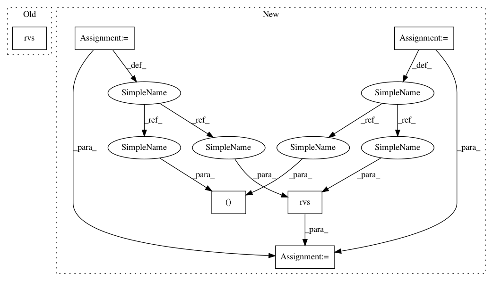

9d55d109b0b6fdae01e54341dd2e2239e77662be,scipy/stats/_continuous_distns.py,nct_gen,_rvs,#nct_gen#Any#Any#,3086
Before Change
def _rvs(self, df, nc):
return (norm.rvs(loc=nc, size=self._size) * sqrt(df) /
sqrt(chi2.rvs(df, size=self._size)))
def _pdf(self, x, df, nc):
n = df*1.0
After Change
return (df > 0) & (nc == nc)
def _rvs(self, df, nc):
sz, rndm = self._size, self._random_state
n = norm.rvs(loc=nc, size=sz, random_state=rndm)
c2 = chi2.rvs(df, size=sz, random_state=rndm)
return n * sqrt(df) / sqrt(c2)
def _pdf(self, x, df, nc):
In pattern: SUPERPATTERN
Frequency: 3
Non-data size: 6
Instances
Project Name: scipy/scipy
Commit Name: 9d55d109b0b6fdae01e54341dd2e2239e77662be
Time: 2014-12-07
Author: evgeni@burovski.me
File Name: scipy/stats/_continuous_distns.py
Class Name: nct_gen
Method Name: _rvs
Project Name: scipy/scipy
Commit Name: 9d55d109b0b6fdae01e54341dd2e2239e77662be
Time: 2014-12-07
Author: evgeni@burovski.me
File Name: scipy/stats/_continuous_distns.py
Class Name: nct_gen
Method Name: _rvs
Project Name: scipy/scipy
Commit Name: 9d55d109b0b6fdae01e54341dd2e2239e77662be
Time: 2014-12-07
Author: evgeni@burovski.me
File Name: scipy/stats/_continuous_distns.py
Class Name: dweibull_gen
Method Name: _rvs
Project Name: scipy/scipy
Commit Name: 9d55d109b0b6fdae01e54341dd2e2239e77662be
Time: 2014-12-07
Author: evgeni@burovski.me
File Name: scipy/stats/_continuous_distns.py
Class Name: dgamma_gen
Method Name: _rvs